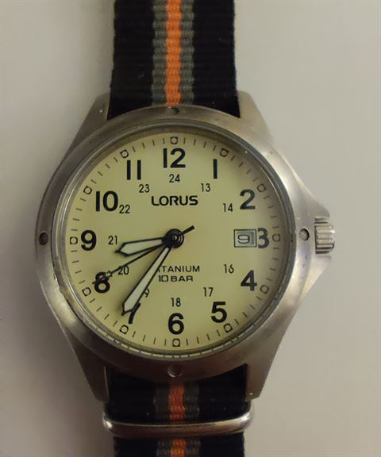
Lorus Titanium field watch
The lightest watch I own — proof that titanium doesn’t have to cost a fortune.
| Maker | Lorus (Seiko group) |
|---|---|
| Movement | Seiko VX42 quartz |
| Case | 36 mm sandblasted titanium, 100 m (10 bar), mineral glass, Lumibrite |
| Era | Current production |
History
Lorus was launched by Seiko in 1982 as its affordable line, first in Europe, and has sold well over 120 million watches since. This model is a modern military-style field watch: a 24-hour scale on the inner ring (13–24), Lumibrite lume and a titanium case roughly 40% lighter than the same watch in steel — plus hypoallergenic and corrosion-resistant.
Watch people often compare it to the Pulsar G10 issued to the British Army, which is no coincidence: Pulsar is Seiko’s other budget brand and shares the same design brief. It is the classic “beater” of my collection — cheap, tough and readable at a glance.
Value: €40–50 new, roughly €15–30 used.
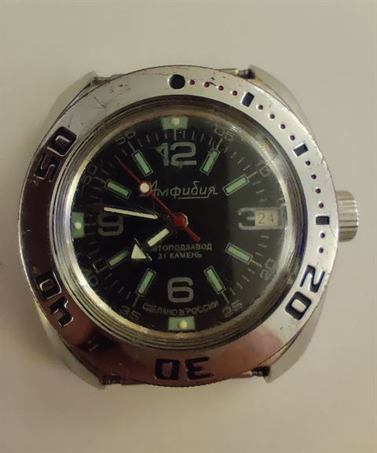
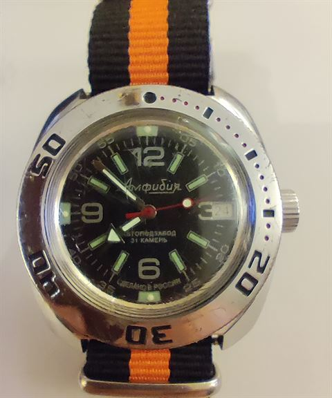
Vostok Amphibia
The Soviet answer to the dive watch — and possibly the cleverest case design of the 1960s.
| Maker | Vostok (Chistopol Watch Factory, Russia) |
|---|---|
| Movement | Vostok calibre 2416B automatic, 31 jewels, 19,800 vph, ~31 h reserve |
| Case | ~40 mm “Ministry” cushion case, domed acrylic crystal, 200 m |
| Era | Designed 1967; this example is a modern classic model |
History
In 1967 the Soviet Navy asked the Chistopol factory for a 200-metre dive watch. Instead of copying Swiss case construction, engineers Mikhail Novikov and Vera Belova turned the problem inside out: a two-piece caseback and a domed acrylic crystal that flex under pressure and press even tighter against the seals the deeper you go. The screw-down crown is famously “wobbly” — by design, and it also seals harder under pressure.
The calibre 2416B is built in-house with 31 jewels, and like many Soviet movements it has character: no hacking, and no quick-set date (you rock the hands back and forth across midnight to advance it). This example wears the classic red-dot bezel, the Cyrillic “Амфибия” dial and an orange NATO strap.
Value: roughly €50–120 used — one of the best-value mechanical divers in the world.
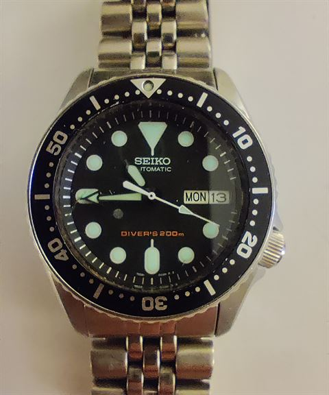
Seiko SKX007
The most famous entry-level dive watch ever made — discontinued, but never forgotten.
| Maker | Seiko (Japan) |
|---|---|
| Movement | Seiko calibre 7S26 automatic, 21 jewels, 21,600 vph, ~41 h reserve |
| Case | 42 mm steel, ISO 6425, 200 m, Hardlex crystal, screw-down crown at 4, day/date |
| Era | 1996–2019 |
History
Produced for 23 years, the SKX007 was the gateway drug for a generation of collectors. Its dive-watch line goes back to Seiko’s first professional diver, the 62MAS of 1965. The 7S26 movement is famously unglamorous — it doesn’t hack and can’t be hand-wound — yet it runs for decades with barely any attention.
When Seiko discontinued the SKX in 2019, prices immediately started climbing: a good used example now costs more than the watch did new. LumiBrite lume, a unidirectional bezel and ISO 6425 certification made it a genuine dive tool you could wear anywhere. Collectors joke that a perfectly aligned chapter ring is the real limited edition — alignment was famously hit-or-miss.
Value: roughly €280–450 used, more with box and papers.
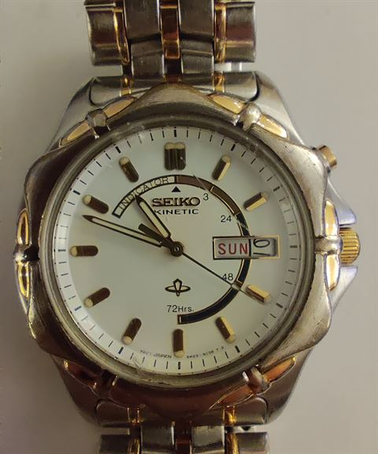
Seiko Kinetic (5M42)
A quartz watch you never change a battery in — powered by your own movement.
| Maker | Seiko (Japan) |
|---|---|
| Movement | Seiko calibre 5M42 Kinetic (auto-quartz: rotor + micro-generator + capacitor), day/date, power-reserve indicator |
| Case | Two-tone steel with gold plating |
| Era | Late 1990s–2000s model |
History
Seiko first showed this idea at the Basel fair in 1986 under the project name AGM; the first commercial watches followed in 1988 as the “AGS” and the line was renamed Kinetic in 1997. An oscillating weight drives a micro-generator that charges a capacitor — the first movement ever to turn wrist motion into electricity. By 2007 Seiko had sold over 8 million Kinetics.
This two-tone 5M42 has the day/date window at 3 o’clock and the signature power-reserve button at 2: press it and the seconds hand jumps forward to show how much charge is left. After many years the capacitor eventually needs replacing — a cheap, routine service. That is probably why used two-tone examples are such bargains today.
Value: roughly €60–150 used.
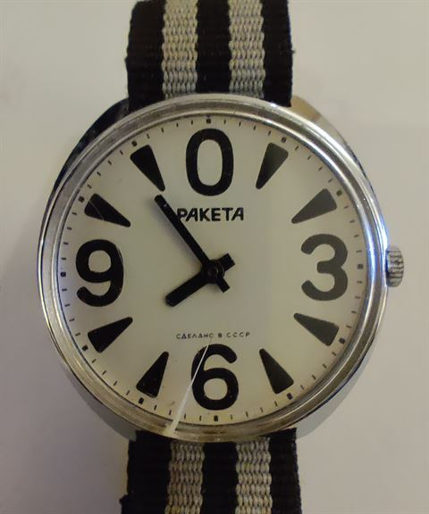
Raketa Big Zero
The watch that allegedly explained Perestroika.
| Maker | Raketa (Petrodvorets Watch Factory, Saint Petersburg) |
|---|---|
| Movement | Raketa calibre 2609.HA hand-wound, 18,000 A/h, Incabloc shock protection, Breguet overcoil |
| Case | 39 mm cushion, acrylic crystal |
| Era | c. 1980 (design sketch 1979) |
History
The factory behind Raketa was founded by Peter the Great in 1721 as the imperial lapidary works, cut jewels for Soviet watch movements from 1938, and took the name Raketa (“rocket”) in 1961 in honour of Gagarin’s flight. The Big Zero arrived around 1980 — designed, the story goes, to be readable by the visually impaired, with its oversized quarter numerals and a giant zero at 12.
The famous anecdote: on a 1985 trip to Italy, Mikhail Gorbachev was asked what Perestroika meant and held up his Big Zero — “the Soviet people are starting from zero.” It almost certainly never happened, but the press loved it and the nickname stuck. The Big Zero came in a huge range of dial variants, from plain white to commemorative editions with special USSR signatures. Beware if you shop for one: the Big Zero is among the most faked Soviet watches on the market, and “franken” watches with mixed parts are common. The modern Raketa factory still sells a reissue — for €750.
Value: roughly €130–200 for a genuine Soviet example.
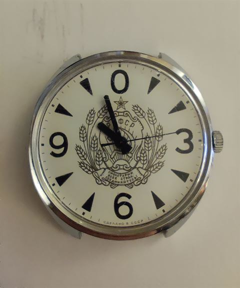
Raketa Big Zero — USSR emblem edition
The Big Zero with the full Soviet coat of arms on the dial — a little piece of Cold War iconography for the wrist.
| Maker | Raketa (Petrodvorets Watch Factory, Saint Petersburg) |
|---|---|
| Movement | Raketa calibre 2609.HA hand-wound, 19 jewels, 18,000 A/h |
| Case | 39 mm cushion, acrylic crystal |
| Era | 1980s, late Soviet period |
History
This second Big Zero carries the official state emblem of the USSR on the dial: the hammer and sickle for the workers and farmers, the wheat ears for agriculture, the red star for communism, and the motto “Пролетарии всех стран, соединяйтесь!” — “Workers of the world, unite!” — above the letters CCCP.
Emblem dials like this were produced in the 1980s as commemorative and souvenir pieces alongside the plain “РАКЕТА” versions, and they are among the most recognisable and sought-after Soviet dial variants today. The signature “Сделано в СССР” (“Made in the USSR”) anchors the watch firmly in the late Soviet era. As with all Big Zeros, originality matters: a correct example houses the 2609.HA, while mixed “franken” parts are common on the market.
Value: roughly €150–250 — emblem and commemorative dials are scarcer than plain ones.
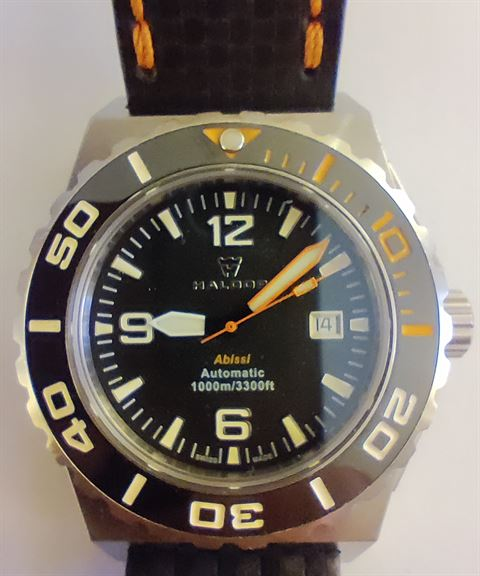
Haldor Abissi 1000m
A 1,000-metre diver from a Slovenian microbrand, with an Italian name for the abyss.
| Maker | Haldor (Slovenia) |
|---|---|
| Movement | ETA 2824-2 automatic, top grade |
| Case | 45.5 mm steel, 15.5 mm thick, helium escape valve at 9, 4 mm sapphire with AR, ceramic bezel, 1000 m / 3300 ft |
| Era | Launched 2015 |
History
“Abissi” is Italian for “abysses”, and the watch walks the talk: the case was tested by an independent Swiss laboratory to 1000 metres, and a helium escape valve lets saturation divers release gas that seeps in during long decompressions. Haldor launched it around 2015 through crowdfunding at roughly €750 — a fraction of what established Swiss brands ask for comparable depth ratings.
It is built like a tank: 45.5 mm across and over 15 mm thick, with a 4 mm anti-reflective sapphire crystal, a ceramic bezel insert and Super-LumiNova C3. The orange hand and markers are the classic deep-sea touch, easy to read in low light. The ETA 2824-2 inside is one of the most serviceable movements in the world — any watchmaker can work on it.
Value: roughly €350–450 used.
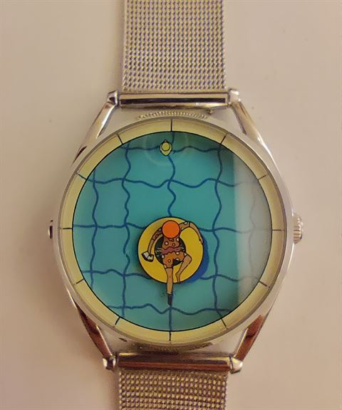
Mr Jones “A Perfectly Useless Afternoon”
The hours are a leg, the minutes are a rubber duck — and it tells you to slow down.
| Maker | Mr Jones Watches (London, founded 2007) |
|---|---|
| Movement | Quartz (a mechanical version with Swiss STP1-11 followed in 2023) |
| Case | 37 mm steel, sapphire crystal, 5 ATM, 18 mm strap |
| Design | Kristof Devos (Belgium), released 2020 |
History
London-based Mr Jones Watches commissions artists to turn dials into miniature artworks, and this one is by the Belgian illustrator Kristof Devos: a figure lounges on an inflatable ring in a swimming pool, the outstretched leg points to the hour, and a yellow rubber duck paddles around the edge to show the minutes.
The title comes from a line by the Chinese writer Lin Yutang: “If you can spend a perfectly useless afternoon in a perfectly useless manner, you have learned how to live.” It is the anti-tool-watch of my collection — no diving depth, no tachymeter, just permission to do nothing. The original quartz version launched at £195; the 2023 mechanical version was £495.
Value: roughly €150–250 used (quartz version).
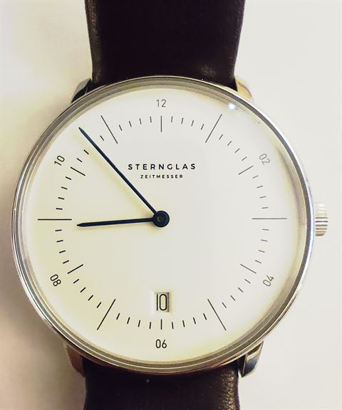
Sternglas Naos Automatik
Bauhaus from Hamburg — a German design watch that doesn’t cost a month’s salary.
| Maker | Sternglas Zeitmesser (Hamburg, founded 2016) |
|---|---|
| Movement | Miyota calibre 8215 automatic, 21,600 vph, ~42 h reserve |
| Case | 38 mm steel, domed sapphire crystal, 5 ATM, 20 mm lugs |
| Era | Current production |
History
Sternglas is an independent brand from Hamburg that set out to make clean, Bauhaus-inspired watches affordable. This is the Naos Automatik — often misremembered as “Naumann” — with the characteristic even-number dial (02, 04, 06… 12), a date window at 6 and a domed sapphire crystal. The design language descends from the German tradition of Junghans and Max Bill: no decoration, only function.
The movement is a workhorse Miyota 8215, regulated in-house by Sternglas — real-world accuracy often beats the official spec. The Naos won a German Design Award in 2024, and the brand grew from a 2016 Kickstarter to a catalogue sold through hundreds of retailers worldwide.
Value: €399–429 new; roughly €250–320 used.
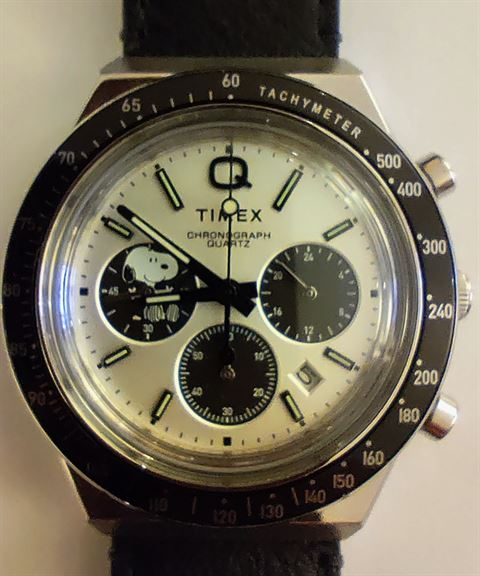
Timex Q Chronograph × Peanuts (Snoopy)
Snoopy on a panda dial — Timex’s 1979 icon, reissued for the Peanuts generation.
| Maker | Timex (USA, est. 1854 as the Waterbury Clock Company) |
|---|---|
| Movement | Quartz chronograph (Seiko Epson) |
| Case | 40 mm steel, box-domed acrylic crystal, 50 m, black tachymeter bezel |
| Era | 2024/2025 release, reference TW2W68900 |
History
The original Q Timex of 1979 — the Q stood for “quartz” — was Timex’s answer to the quartz crisis: a fashion-forward steel watch with a battery. Snoopy had already been on Timex dials since 1969, so the Peanuts × Q Chronograph is a double reunion of two 1970s icons.
This edition pairs a white panda dial with black subdials: Snoopy lounges in the 9 o’clock subdial, a 24-hour indicator sits at 3, and the caseback is engraved with Peanuts artwork and fitted with a battery hatch. It retailed at $249 (about €230) when it arrived in 2025 and quickly sold out — asking prices now run above retail, which makes it the youngest watch in the collection and already the hardest to replace.
Value: roughly €180–300 on the current market.
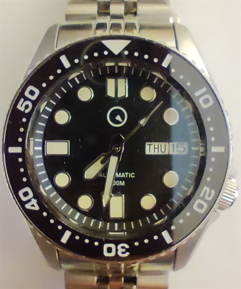
Islander SKX-style diver
The SKX with everything the SKX lacked — by the dealer who sold more SKXs than anyone.
| Maker | Islander, house brand of Long Island Watch (New York, Marc Frankel) |
|---|---|
| Movement | Seiko NH36 automatic, 24 jewels, hacking + hand-winding |
| Case | 38 or 43 mm steel, sapphire with AR, lumed ceramic bezel, 200 m, crown at 4 |
| Era | Launched 2019, current production |
History
When Seiko killed the SKX in 2019, Marc Frankel of Long Island Watch — one of the biggest Seiko dealers in the United States — decided to build what fans had been asking for: the same SKX shape with the parts upgraded. The Islander keeps the day/date, the 4 o’clock crown and the black dive bezel, but swaps the old 7S26 for a Seiko NH36 that hacks and hand-winds, replaces the Hardlex crystal with sapphire, and fits a fully lumed ceramic bezel insert.
It launched at $299 and remains a favourite of SKX fans who want the look without the collector tax — and of anyone who ever wished the original could be wound by hand. This example wears the classic jubilee bracelet, like the watch it honours.
Value: roughly €175–210 used.